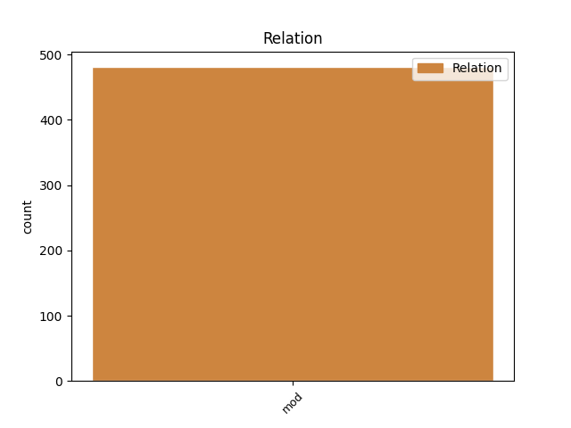
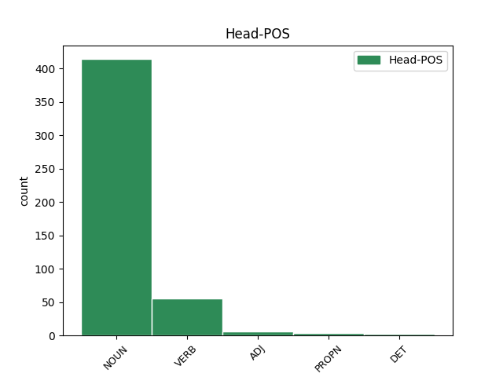
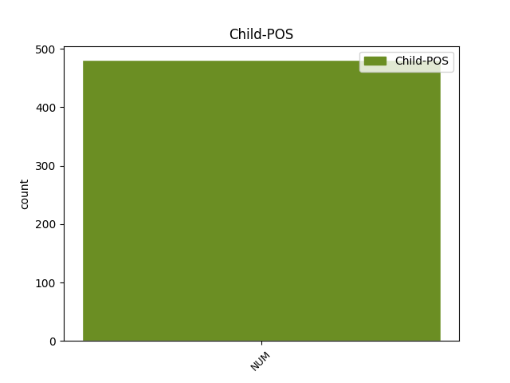

Distribution of features within this leaf



Agreement Rules sorted by frequency.
- When the dependent token is the modifer(mod) of the head token, and the dependent token is NUM.
1 В _ _ _ _ 0 _ _ _
2 трудную _ _ _ _ 0 _ _ _
3 минуту _ _ _ _ 0 _ _ _
4 жизни _ _ _ _ 0 _ _ _
5 Павлов _ _ _ _ 0 _ _ _
6 убедился _ _ _ _ 0 _ _ _
7 , _ _ _ _ 0 _ _ _
8 что _ _ _ _ 0 _ _ _
9 не _ _ _ _ 0 _ _ _
10 совершил _ _ _ _ 0 _ _ _
11 ошибки _ _ _ _ 0 _ _ _
12 в _ _ _ _ 0 _ _ _
13 то _ _ _ _ 0 _ _ _
14 , _ _ _ _ 0 _ _ _
15 уже _ _ _ _ 0 _ _ _
16 далекое _ _ _ _ 0 _ _ _
17 утро _ _ _ _ 0 _ _ _
18 , _ _ _ _ 0 _ _ _
19 когда _ _ _ _ 0 _ _ _
20 по _ _ _ _ 0 _ _ _
21 одному один NUM _ Case=Dat|Gender=Neut 22 mod _ _
22 движению движение NOUN _ Animacy=Inan|Case=Dat|Gender=Neut|Number=Sing 0 _ _ _
23 круглых _ _ _ _ 0 _ _ _
24 , _ _ _ _ 0 _ _ _
25 сильных _ _ _ _ 0 _ _ _
26 рук _ _ _ _ 0 _ _ _
27 , _ _ _ _ 0 _ _ _
28 медленно _ _ _ _ 0 _ _ _
29 всплывшим _ _ _ _ 0 _ _ _
30 к _ _ _ _ 0 _ _ _
31 тяжелым _ _ _ _ 0 _ _ _
32 волосам _ _ _ _ 0 _ _ _
33 , _ _ _ _ 0 _ _ _
34 угадал _ _ _ _ 0 _ _ _
35 спасительную _ _ _ _ 0 _ _ _
36 мощь _ _ _ _ 0 _ _ _
37 будущей _ _ _ _ 0 _ _ _
38 своей _ _ _ _ 0 _ _ _
39 спутницы _ _ _ _ 0 _ _ _
40 на _ _ _ _ 0 _ _ _
41 радость _ _ _ _ 0 _ _ _
42 и _ _ _ _ 0 _ _ _
43 горе _ _ _ _ 0 _ _ _
44 . _ _ _ _ 0 _ _ _
Disagree Examples:
1 Любые _ _ _ _ 0 _ _ _
2 открытия _ _ _ _ 0 _ _ _
3 в _ _ _ _ 0 _ _ _
4 реставрации _ _ _ _ 0 _ _ _
5 , _ _ _ _ 0 _ _ _
6 безусловно _ _ _ _ 0 _ _ _
7 , _ _ _ _ 0 _ _ _
8 путь _ _ _ _ 0 _ _ _
9 спасения спасение NOUN _ Animacy=Inan|Case=Gen|Gender=Neut|Number=Sing 0 _ _ _
10 одного один NUM _ Case=Gen|Gender=Masc 9 mod _ SpaceAfter=No
11 , _ _ _ _ 0 _ _ _
12 а _ _ _ _ 0 _ _ _
13 то _ _ _ _ 0 _ _ _
14 и _ _ _ _ 0 _ _ _
15 десятков _ _ _ _ 0 _ _ _
16 шедевров _ _ _ _ 0 _ _ _
17 . _ _ _ _ 0 _ _ _
1 Впрочем _ _ _ _ 0 _ _ _
2 , _ _ _ _ 0 _ _ _
3 недавнее _ _ _ _ 0 _ _ _
4 открытие _ _ _ _ 0 _ _ _
5 китайских _ _ _ _ 0 _ _ _
6 археологов _ _ _ _ 0 _ _ _
7 свидетельствует _ _ _ _ 0 _ _ _
8 , _ _ _ _ 0 _ _ _
9 что _ _ _ _ 0 _ _ _
10 пальма _ _ _ _ 0 _ _ _
11 первенства _ _ _ _ 0 _ _ _
12 и _ _ _ _ 0 _ _ _
13 этого _ _ _ _ 0 _ _ _
14 поистине _ _ _ _ 0 _ _ _
15 великого _ _ _ _ 0 _ _ _
16 изобретения _ _ _ _ 0 _ _ _
17 принадлежит _ _ _ _ 0 _ _ _
18 Поднебесной _ _ _ _ 0 _ _ _
19 : _ _ _ _ 0 _ _ _
20 в _ _ _ _ 0 _ _ _
21 провинции _ _ _ _ 0 _ _ _
22 Хенань _ _ _ _ 0 _ _ _
23 на _ _ _ _ 0 _ _ _
24 раскопках _ _ _ _ 0 _ _ _
25 гробницы гробница NOUN _ Animacy=Inan|Case=Gen|Gender=Fem|Number=Sing 0 _ _ _
26 одного один NUM _ Case=Gen|Gender=Masc 25 mod _ _
27 из _ _ _ _ 0 _ _ _
28 правителей _ _ _ _ 0 _ _ _
29 западной _ _ _ _ 0 _ _ _
30 ханьской _ _ _ _ 0 _ _ _
31 династии _ _ _ _ 0 _ _ _
32 обнаружили _ _ _ _ 0 _ _ _
33 туалет _ _ _ _ 0 _ _ _
34 с _ _ _ _ 0 _ _ _
35 каменным _ _ _ _ 0 _ _ _
36 сиденьем _ _ _ _ 0 _ _ _
37 , _ _ _ _ 0 _ _ _
38 удобными _ _ _ _ 0 _ _ _
39 подлокотниками _ _ _ _ 0 _ _ _
40 и _ _ _ _ 0 _ _ _
41 проточной _ _ _ _ 0 _ _ _
42 водой _ _ _ _ 0 _ _ _
43 : _ _ _ _ 0 _ _ _
44 после _ _ _ _ 0 _ _ _
45 смерти _ _ _ _ 0 _ _ _
46 люди _ _ _ _ 0 _ _ _
47 должны _ _ _ _ 0 _ _ _
48 были _ _ _ _ 0 _ _ _
49 наслаждаться _ _ _ _ 0 _ _ _
50 тем _ _ _ _ 0 _ _ _
51 же _ _ _ _ 0 _ _ _
52 , _ _ _ _ 0 _ _ _
53 чем _ _ _ _ 0 _ _ _
54 и _ _ _ _ 0 _ _ _
55 при _ _ _ _ 0 _ _ _
56 жизни _ _ _ _ 0 _ _ _
57 . _ _ _ _ 0 _ _ _
1 Американские _ _ _ _ 0 _ _ _
2 психологи _ _ _ _ 0 _ _ _
3 недавно _ _ _ _ 0 _ _ _
4 усомнились _ _ _ _ 0 _ _ _
5 в _ _ _ _ 0 _ _ _
6 том _ _ _ _ 0 _ _ _
7 , _ _ _ _ 0 _ _ _
8 что _ _ _ _ 0 _ _ _
9 традиционно _ _ _ _ 0 _ _ _
10 являлось являться VERB _ Aspect=Imp|Gender=Neut|Mood=Ind|Number=Sing|Tense=Past|VerbForm=Fin|Voice=Mid 0 _ _ _
11 одним один NUM _ Case=Ins|Gender=Masc 10 mod _ _
12 из _ _ _ _ 0 _ _ _
13 символов _ _ _ _ 0 _ _ _
14 процветания _ _ _ _ 0 _ _ _
15 США _ _ _ _ 0 _ _ _
16 и _ _ _ _ 0 _ _ _
17 ее _ _ _ _ 0 _ _ _
18 граждан _ _ _ _ 0 _ _ _
19 . _ _ _ _ 0 _ _ _
1 Под _ _ _ _ 0 _ _ _
2 руководством руководство NOUN _ Animacy=Inan|Case=Ins|Gender=Neut|Number=Sing 0 _ _ _
3 одного один NUM _ Case=Gen|Gender=Masc 2 mod _ _
4 из _ _ _ _ 0 _ _ _
5 родоначальников _ _ _ _ 0 _ _ _
6 RoboCup _ _ _ _ 0 _ _ _
7 лаборатория _ _ _ _ 0 _ _ _
8 ведет _ _ _ _ 0 _ _ _
9 разработки _ _ _ _ 0 _ _ _
10 с _ _ _ _ 0 _ _ _
11 1992 _ _ _ _ 0 _ _ _
12 г _ _ _ _ 0 _ _ _
13 . _ _ _ _ 0 _ _ _
1 - _ _ _ _ 0 _ _ _
2 Я _ _ _ _ 0 _ _ _
3 бы _ _ _ _ 0 _ _ _
4 сначала _ _ _ _ 0 _ _ _
5 договорился _ _ _ _ 0 _ _ _
6 с _ _ _ _ 0 _ _ _
7 Литвой _ _ _ _ 0 _ _ _
8 о _ _ _ _ 0 _ _ _
9 предоставлении _ _ _ _ 0 _ _ _
10 нам _ _ _ _ 0 _ _ _
11 90-километрового _ _ _ _ 0 _ _ _
12 транзитного _ _ _ _ 0 _ _ _
13 коридора _ _ _ _ 0 _ _ _
14 в _ _ _ _ 0 _ _ _
15 обмен _ _ _ _ 0 _ _ _
16 на _ _ _ _ 0 _ _ _
17 часть _ _ _ _ 0 _ _ _
18 территории _ _ _ _ 0 _ _ _
19 Смоленской _ _ _ _ 0 _ _ _
20 области _ _ _ _ 0 _ _ _
21 - _ _ _ _ 0 _ _ _
22 сказал _ _ _ _ 0 _ _ _
23 он _ _ _ _ 0 _ _ _
24 в _ _ _ _ 0 _ _ _
25 эфире эфир NOUN _ Animacy=Inan|Case=Loc|Gender=Masc|Number=Sing 0 _ _ _
26 одной один NUM _ Case=Gen|Gender=Fem 25 mod _ _
27 из _ _ _ _ 0 _ _ _
28 телекомпаний _ _ _ _ 0 _ _ _
29 . _ _ _ _ 0 _ _ _